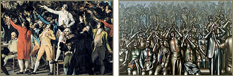

Jacques Louis David: “Boldhuseden”, 1791. OG Dietmar Ullrich: “Tilskuerne”, 1973.
"Verden i dansk perspektiv" er et websted om verdenshistorien set fra en dansk synsvinkel.
Websistet er et undervisningsmateriale til faget historie på ungdomsuddannelserne, men henvender sig til alle med interesse for historie.
"Verden i dansk perspektiv" giver elever og lærere mulighed for at sammenstykke præcis de materialer, der er relevante for løsning af bestemte opgaver, og som egner sig til bestemte arbejdsformer.
På siderne finder du bl.a.:
- en grundig introduktion til fagets metoder
- et omfattende leksikon
- hundredevis af kilder, billeder og statistikker til historien både før og efter 1914
- interviews med specialister og "vidner" til historien
- tests, der giver mulighed for at afprøve viden og forståelse
- søgefunktion, så du kan finde finde materiale til et bestemt tema
Nyt på sitet
I det seneste videointerview på sitet fortæller Niels Bjerre-Poulsen, den store kender af amerikansk historie, om den amerikanske borgerkrig, dens baggrund og dens konsekvenser. Og perspektivet trækkes helt op til valget af Barrack Obama til amerikansk præsident.